2024.09 – Present
University of Waterloo
PhD Thesis Project
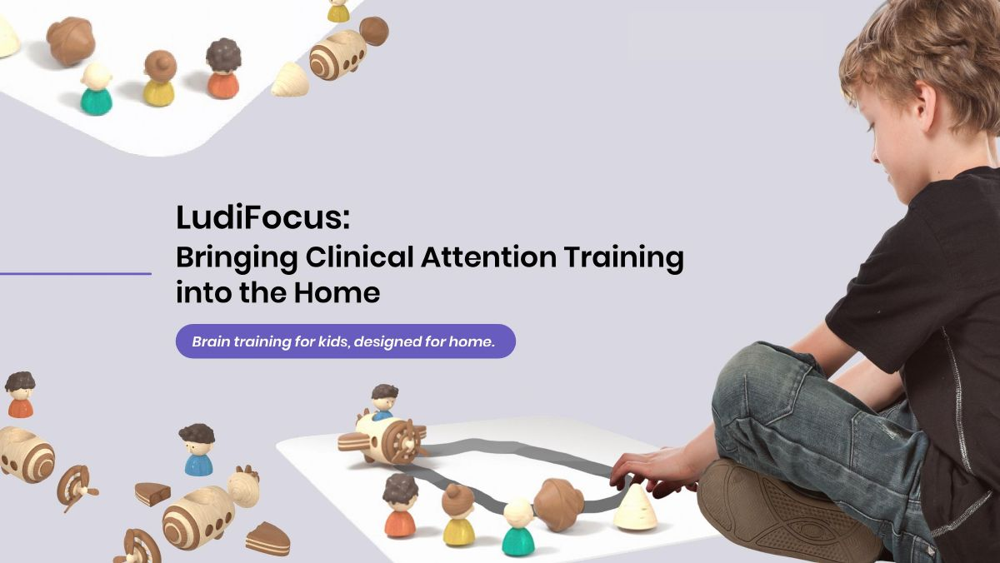
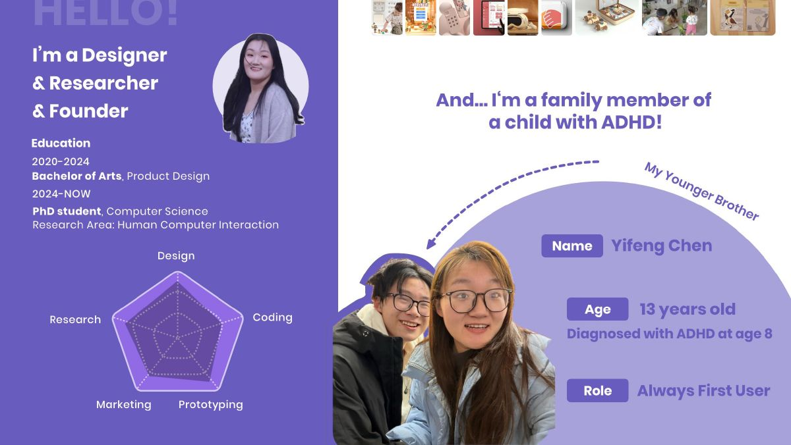
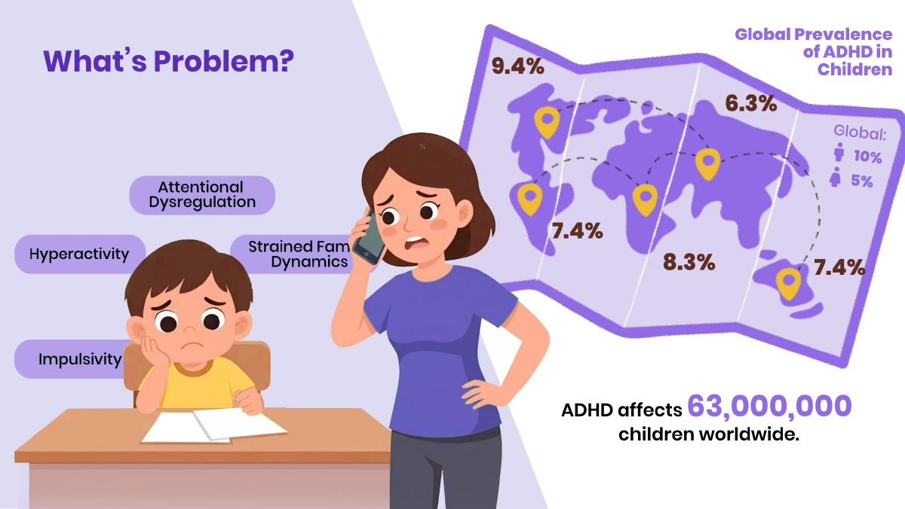
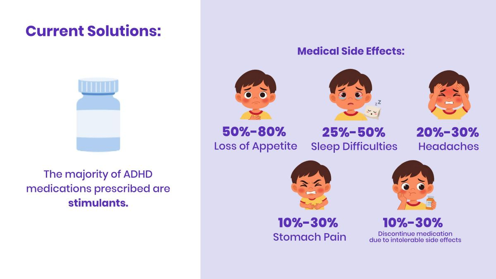
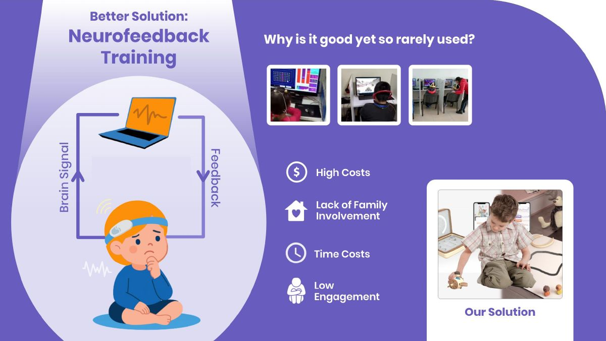

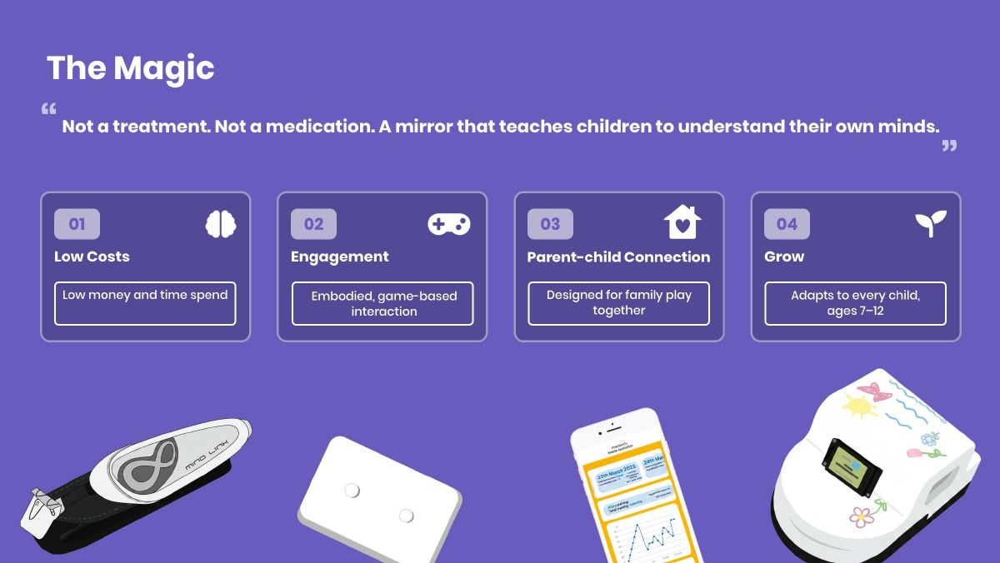
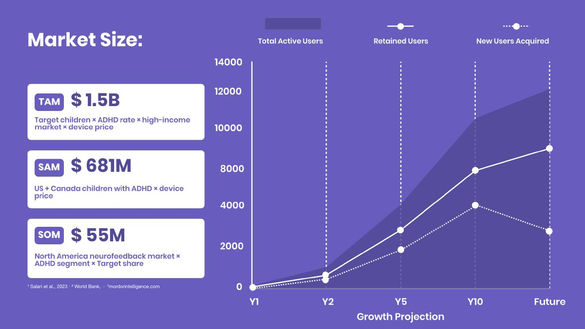
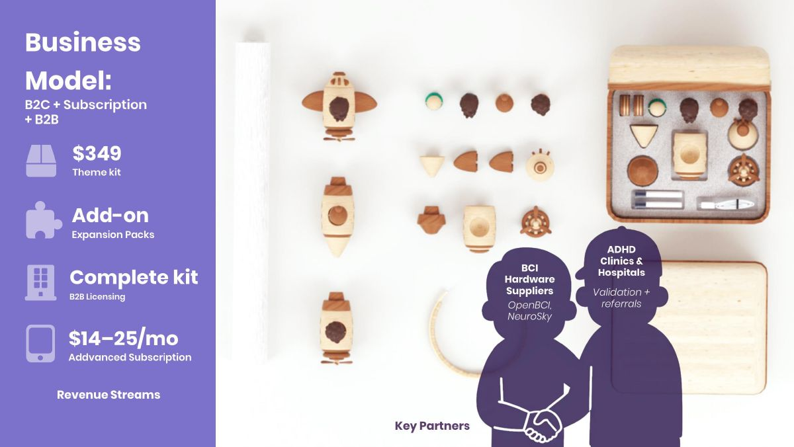
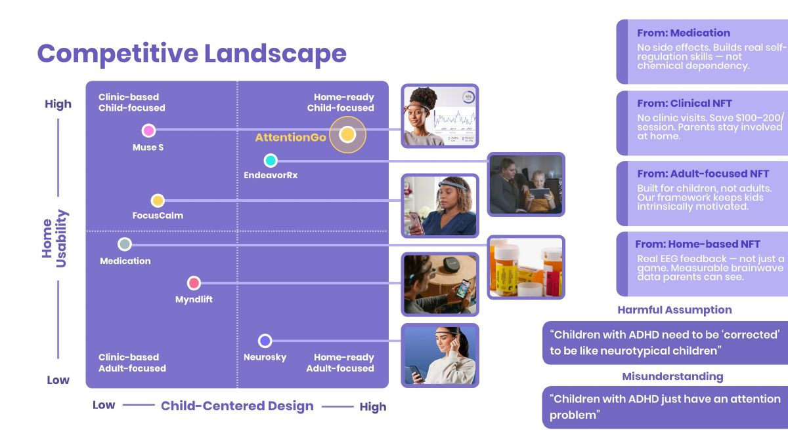
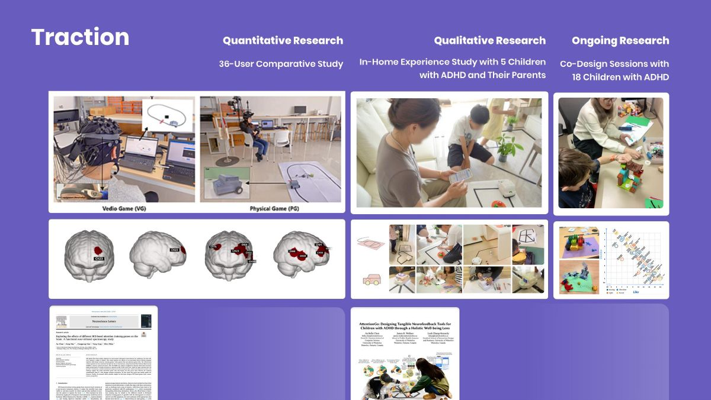
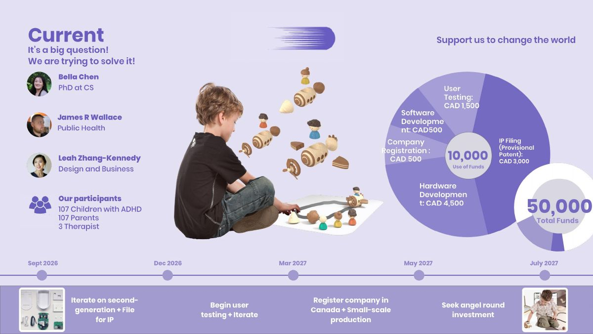
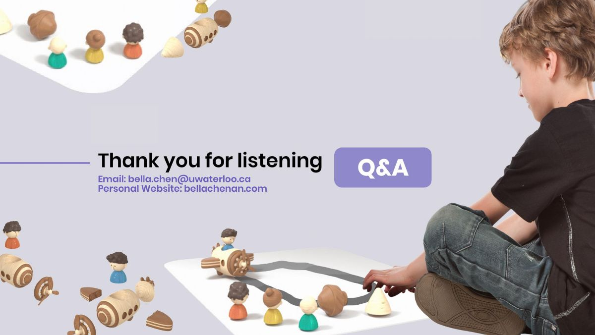
Designing Tangible Brain-Computer Interfaces for Children with ADHD
Neurofeedback is a promising method for attention training in children with ADHD. In this work, we developed a neurofeedback game called AttentionGo, incorporating creativity to enhance motivation. After consulting instructors, parents, and testing with ADHD children, the game demonstrated great potential for future design improvements.
Details
- Turned the research into a startup, AttentionGo (Co-founder & CEO). Led the design of a brain-computer interface system consisting of an EEG headband, custom physical devices, and a parent app; led the team through rapid MVP iterations; admitted to the Accelerator Centre, Canada's top-ranked private incubator.
- Independently recruited 18 families of children with ADHD, ran 33 participatory design workshops with children, and conducted parent interviews and surveys.
- Analyzed workshop and interview data with reflexive thematic analysis (RTA) and proposed 7 child-centered design guidelines for brain-computer interfaces to guide prototype development.
- Wrote a first-author paper, currently under review at CHI '27.
Publications
- Chen An Bella et al. From Training to Understanding Attention: Co-Designing Neurofeedback with Children with ADHD. (Under Review, CHI '27)
- Chen An Bella et al. AttentionGo: Designing Tangible Neurofeedback Tools for Children with ADHD through a Holistic Well-being Lens. (DIS WIP '26)